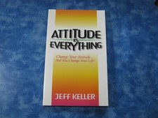

Library › Self-Improvement
Attitude Is Everything — Summary & Key Lessons

Change your attitude... change your life! The lawyer-turned-speaker's 12 lessons on the window you see the world through.
📖 OPEN THE FULL INTERACTIVE BREAKDOWN →🌐 Read it in Hindi, Hinglish, Gujarati, Tamil & 22 more languages — free, with audio.
💡 The Big Idea
Jeff Keller was an unhappy lawyer until a 3 a.m. infomercial purchase (a self-development course) began the turnaround that became his life's work. His framework is disarmingly simple and relentlessly practical — twelve lessons in three parts: SUCCESS BEGINS IN THE MIND (attitude is a window that life's disappointments dirty; you're the only one with the squeegee — and you become what you consistently think about), WATCH YOUR WORDS (self-talk and spoken words program the self-image: stop 'crabbing,' quit the complaining tribe, speak the future you want), and HEAVEN HELPS THOSE WHO ACT (confront fears, swing into action, tolerate failure as tuition, and let networking-by-attitude open doors). No mysticism, no 300-page padding — the original airport classic that keeps outselling its imitators because the basics, done daily, are the advanced course.
🧠 The 6 Key Lessons
Lesson 1: The Window and the Squeegee
Lessons 1–3: Your Attitude Is Your Window
Everyone starts with a clean window — children attempt, fail, laugh, and retry without self-commentary. Then life splashes mud: criticism, rejections, disappointments — and most adults see everything through the accumulated grime, calling the dirty view 'realism.' Keller's foundation: the window can be CLEANED, and you hold the only squeegee — attitude is a choice renewed daily, not a fixed trait. The mechanism is classical: you become what you think about (dominant thoughts steer noticing, choices, and energy); attitude then multiplies or divides your talent (equal skills, unequal outcomes — the difference is the window). His test for self-diagnosis: listen to your own explanations of setbacks for a week — the pessimist's permanent/personal/pervasive pattern versus the optimist's temporary/specific/external one predicts trajectories better than credentials.
📖 Example: Keller's own 3 a.m. turning point is the book's origin: a miserable attorney, glass fully mudded, ordering a $60 course from a Dean Whittier infomercial — and, more importantly, USING it, daily, until the window cleared and the career changed. His recurring… Read the full example →
⚡ Do this: Run the window audit for seven days: log every explanation you give for setbacks (spoken or internal). Sort them: permanent/personal versus temporary/specific. Then squeegee deliberately — rewrite each permanent explanation into its temporary, actionable version.
Lesson 2: Watch Your Words: The Broadcast Becomes the Program
Lessons 4–7: Words Blaze a Trail / Stop Complaining
Words are attitude made audible — and they feed back: every sentence you speak about yourself is an instruction the self-image files. Keller's word-hygiene program: catch the toxic broadcasts ('I could never do that,' 'I'm terrible with money,' 'this always happens to me') and replace them with accurate-but-forward versions ('I'm learning X,' 'until now I've struggled with Y'); stop CRABBING (complaining is rehearsal — every retelling of the grievance re-runs the program and recruits your audience into agreeing with your limits); and prune the complaint tribe (crabs pull each other back into the bucket — spend your hours with people whose words point where you're going). The counterintuitive rule: speak the result BEFORE you feel it — not as delusion but as declaration; the feeling follows the repeated word far more reliably than the word waits for the feeling.
📖 Example: Keller's signature story: deciding to become a motivational speaker while still a full-time lawyer, he had cards printed reading 'Jeff Keller — Attorney at Law' crossed out, with 'Speaker and Writer' beneath — and handed them out BEFORE the career existed.… Read the full example →
⚡ Do this: Institute the language swap: three of your most-repeated limiting sentences, rewritten and rehearsed until automatic. Print (or write) your own 'crossed-out card' — the current identity struck through, the intended one beneath — and put it where you'll see it daily. Quietly relocate one recurring hour away from the complaint table.
Lesson 3: Heaven Helps Those Who Act
Lessons 8–12: Confront Your Fears / Get Out and Try
Attitude without action is a greeting card. Keller's action doctrine: FEAR is a compass, not a wall (the thing you're avoiding is usually the growth path; do the feared thing and the fear dies — wait for courage first and you'll wait forever); FAILURE is tuition (every accomplished person's biography is a catalog of flops metabolized — the only true failure is not attempting); and PERSISTENCE closes the gap between attitude and results (most people quit at the first or second no; the payoff lives past the point where quitting feels reasonable). His networking corollary: attitude IS your networking strategy — enthusiasm, reliability, and genuine interest open more doors than credentials, because people hire, refer, and rescue people they enjoy. The closing arithmetic: think right + speak right + act despite fear, repeated for years = the 'sudden' success everyone else calls luck.
📖 Example: Keller's speaking career is the demonstration: the lawyer terrified of public speaking who joined Toastmasters, spoke badly, kept speaking, spoke less badly — and eventually built the career he'd printed on the crossed-out card. His persistence gallery… Read the full example →
⚡ Do this: Pick the feared action you've postponed longest and schedule it inside 72 hours — done badly counts, waiting doesn't. Keep a tuition ledger: each failure this month logged with its lesson and next attempt date. And test the attitude-networking claim: bring deliberate enthusiasm to five routine interactions this week; note what doors crack open.
Lesson 4: Watch Your Words: The Language Loop That Builds or Breaks You
Part 2: Watch Your Words
Keller's middle section targets the bridge between thought and action: LANGUAGE. Words aren't descriptions of your attitude — they're instructions to it: every 'I'm terrible with names,' 'I could never start a business,' 'this always happens to me' is a command your self-image files and executes (the brain treats repeated speech as programming, and everyone around you adjusts their expectations to match — a double reinforcement). His disciplines: kill the CATASTROPHIC vocabulary ('disaster,' 'nightmare,' 'killing me' for minor frictions — the nervous system responds to the words, not the event); answer 'how are you?' deliberately ('terrific,' 'better and better') not as fake positivity but as self-instruction in public; stop broadcasting your ailments and grievances (Keller's rule: talking about problems to anyone who can't solve them is rehearsing failure with witnesses); and replace 'I have to' with 'I get to' where truthful — the gratitude reframe that converts obligations back into the opportunities they originally were. The compounding effect: language runs hundreds of reps daily; tilt each rep even slightly and the attitude follows within weeks — the cheapest self-improvement lever that exists.
📖 Example: Keller's own turnaround hinged here: as a miserable attorney, he noticed his daily scripts — 'I hate this,' 'I'm trapped,' 'my luck is awful' — and began the experiment of speaking only outcomes he wanted ('I'm building a new career,' 'opportunities are… Read the full example →
⚡ Do this: Run a 48-hour language audit: note every self-limiting or catastrophic phrase you speak (enlist a friend or keep a tally card). Then rewrite your top three offenders into deliberate replacements ('I'm still learning names' / 'it's a challenge, and I've handled worse') and drill them for 30 days. Guard the two public moments especially: your 'how are you?' answer, and how you narrate setbacks in front of others.
Lesson 5: The Power of Belief: Your Attitude Is a Self-Fulfilling Prophecy
Part 1: The Foundation
Keith Harrell's core claim is that your attitude is not a mood — it is a lens that literally changes what you see and what you attract. People who believe they will succeed notice opportunities; people who believe they will fail notice only obstacles. The same meeting, the same market, the same morning looks completely different through each lens. Because your expectations shape your behaviour, and your behaviour shapes results, the belief itself becomes true. The practical takeaway: you cannot always choose your circumstances, but you can always choose the interpretation, and the interpretation is what drives the outcome.
📖 Example: Harrell tells of salespeople given identical leads — those told the leads were 'high quality' outsold those told the leads were 'difficult', purely on the strength of the belief. The data was identical; the attitude created the difference. Read the full example →
⚡ Do this: Tomorrow, deliberately interpret one neutral event as a positive sign — and watch how your behaviour changes the actual outcome.
Lesson 6: Enthusiasm: The Currency That Buys Attention
Part 2: The Tools
Harrell argues that enthusiasm is the most underrated professional asset: it is contagious, memorable and cannot be faked for long. An enthusiastic person wins the interview, the client, the promotion — not because they are smarter, but because energy is what people remember and want to be around. Enthusiasm is a choice you make each morning, reinforced by physical state (posture, voice, movement) — act enthusiastic and the feeling follows the action. In a world of competent but flat professionals, the person who brings genuine energy stands out in every room.
📖 Example: Harrell describes two equally qualified colleagues — the one who greeted every task with visible energy got the plum projects, because people naturally give their best work to those who make the work feel exciting. Enthusiasm became their competitive… Read the full example →
⚡ Do this: Before your next meeting or call, spend 60 seconds physically 'switching on' — stand tall, smile, raise your energy — then bring that state into the conversation.
✅ 5-Step Action Plan
- Audit the window: sort your setback explanations for seven days.
- Swap three limiting sentences; make the crossed-out card.
- Leave the crab bucket one hour at a time.
- Do the longest-postponed feared thing within 72 hours.
- Keep the tuition ledger — failures logged, lessons extracted, retries dated.
⚠️ When This Doesn't Work
'Attitude is everything' is the motto of every startup that died with perfect morale. Segway had the best attitude in business history — Steve Jobs called it the biggest thing since the PC, investors poured $100 million in, the team believed completely — and the market simply didn't care. Attitude determines how you respond to reality; it does not determine reality. Keep the spirit, but let the market's response — not your enthusiasm — set the strategy.
💀 The Graveyard Proves It
🛴 Segway — 'Bigger Than the Internet' — Sold 30k Units in 6 Years. Burn: $100M+; predictions off by 99%. Read the full case study →
💬 Best Quotes from Attitude Is Everything
- “Your attitude is your window to the world.”
- “You become what you think about.”
- “Success comes to those who take action — heaven helps those who act.”
Interactive version: mark lessons as read, listen in your language, share quote cards.